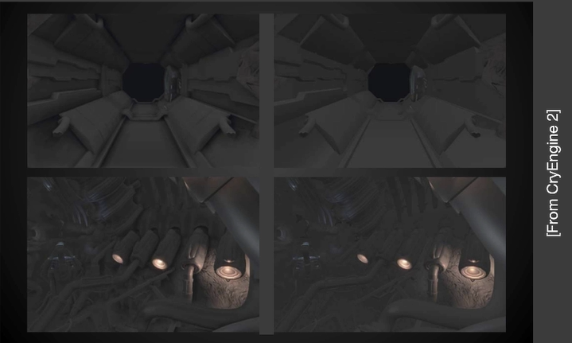
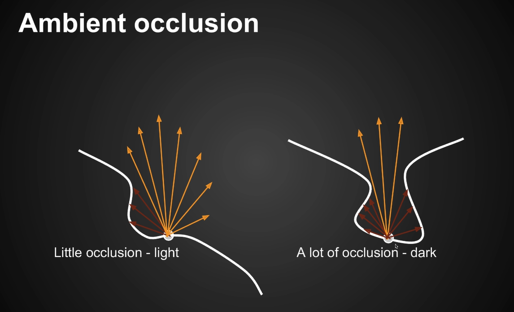
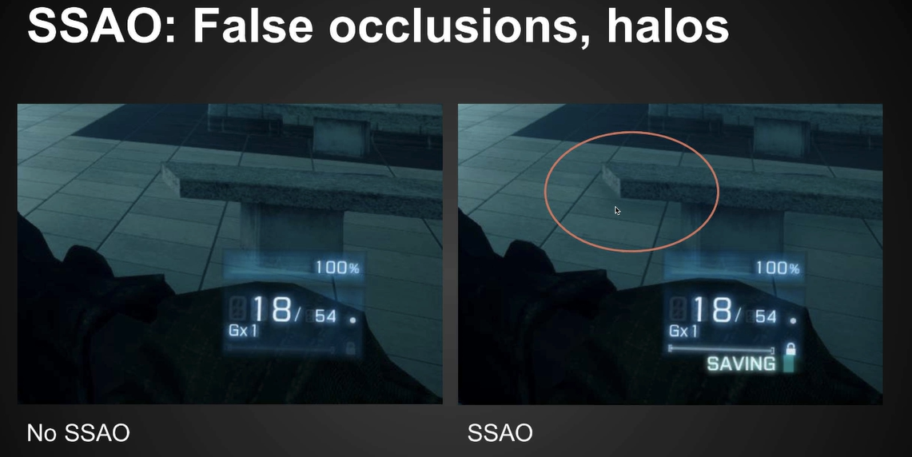
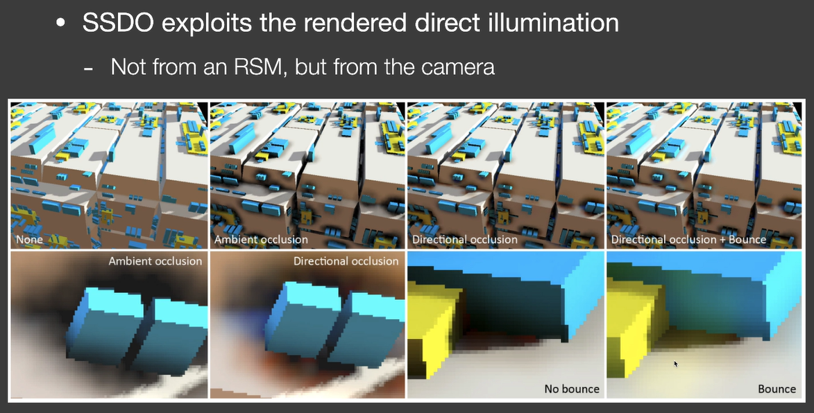

[图形]实时全局光照
Realtime Global Illumination
Reflective Shadow Maps(RSM)
先复习一下101讲过的路径追踪

在P点往各个方向发射光线，有可能打到光源，接收到的是直接光照。但如果不是光源，它打到了Q点，反射到P点的Radiance，也是P点接收到的光照。也就是说并不关心Radiance的来源。
换个思路，这些Q点在场景中，也相当于一个光源去照亮其它物体。一切被直接光照照到的物体都会作为光源（次级光源secondary light source），继续照亮其他物体
根据上面的思路，为了获取p点的间接光照，我们需要事先知道些什么？
- 哪些物体是次级光源？换句话说，哪些物体表面会直接被光源照到？
- 每个次级光源对shading point的贡献各是多少？（每个表面都类似一个面光源）
为了用次级光源照亮点p，其实是从点p去观察那些次级光源，但是对于点p，不知道出射方向是往哪里射的。为了不依赖观察方向，我们假设，所有的次级光源表面都是diffuse的（不需要假设接收物也是diffuse的）
第一个问题很简单，shadow map就能解决
第二个问题，GAMES101讲路径追踪时讲了光源重要性采样，这里可以用同样的思路
回顾一下光源重要性采样的渲染方程
事实上shadow map上的光源非常小，基本上可以直接替换
那如何把q点到p点的radiance解出来（就是说如何解渲染方程）？
对于diffuse的次级光源，因为diffuse系数是常数
根据BRDF定义，等于出射的Radiance除以入射的Irradiance，而Irradiance又等于flux除以面积，那么
带回到渲染方程，会发现面积直接消去了，我们甚至不需要patch的实际大小。
最终，可以简化出这样一个公式

这里求出的是次级光源对着色点贡献的Irradiance
可见性怎么办呢？凉拌。不可能对每个shading point都做一张shadow map去检查遮挡
公式的分母里面，有个四次方。闫神经过慎重的考虑，认为，作者在paper里写错了，作者可能假设Radiance在q到p的传播过程中会有一个平方衰减（闫神说如果他错了直播吃键盘（对不对不重要，就是想看老师吃键盘
仔细观察公式，分子有法线和某个向量的点乘，通常法线是归一化的，而另外一个向量没有归一化，所以分子多乘了两个距离，所以分母变成四次方（没看到直播吃键盘，亏死
RSM有个小问题。事实上不是所有次级光源都对shading point有贡献。一般来说，距离比较远的次级光源贡献会少很多。那可不可只找离得比较近的次级光源呢。
paper做了一个很大胆的假设，在世界坐标下比较接近的点对着色点的贡献大。这个不太好找，那就把shading point投影到shadow map上，根据一个权重去采样周围的点，这里可以用到PCSS

所以，计算RSM需要的数据是：depth，world coordinate，normal，flux
很多游戏的手电筒会用到RSM
RSM的好处：写起来很方便
RSM的缺陷：
- 和shadow map一样，有多少光源就要算多少次，性能和光源数量有关系
- 不计算可见性，有些时候看起来没那么真实
- 反射物表面必须是diffuse的（因为这个假设RSM才成立）
- 采样的质量与速度需要权衡
- 只有一次bounce
Light Propagation Volumes(LPV)
LPV要解决的核心问题：做间接光照时，如果可以立刻得到各个方向上到达一个shading point的Radiance，那就起飞了
物理上，Radiance在空间中沿着路径传播时是一个不变的量
LPV场景做了3D网格划分，分成一大堆方块（体素Voxel），Radiance在Voxel中传播，就将问题转化成了，每个Voxel中传播的Radiance是多少
计算步骤：
- 知道哪些点接收到了直接光照，计算出次级光源发出的radiance，使用RSM
- 将radiance注入（Injection）到划分后的格子内，格子内的radiance方向都不一样，把它们加起来，结果是往空间中各个方向上的radiance的初始值，再用SH压缩
- 将格子中的radiance向各个方向传播。根据方向，可以得出传播到相邻6个面时，那些面接收到的Irradiance量，然后继续SH。一直扩散直到整个网格稳定
- 使用格子中的数据进行渲染。此时格子中已经是各个方向上接收到的Irradiance了
LPV的问题：
- 因为网格大小，且我们认为Voxel内的radiance都是一样的，传播时就可能会穿墙，导致照亮根本不可能照到的地方（Light leaking）
LPV不是预计算
Voxel Global Illumination(VXGI)
VXGI也是一种基于Voxel的算法，但是做法与LPV完全不同
RSM是two-pass算法，LPV可以算是four-pass算法，而VXGI也是two-pass
特点：
- RSM认为次级光源是每个像素表示的微小表面。VXGI的次级光源是将场景离散成了Voxel（就是类似mc那样的方块堆出来的），使用树形结构组织
- LPV在第三pass将radiance传播到整个场景。VXGI在第二pass从摄像机出发渲染整个场景，根据表面的材质算出反射方向，然后在反射方向上获取已经存在的Voxel里包含的信息
（听不懂，下一个）
Screen Space Ambient Occlusion(SSAO)
Screen Space
什么是屏幕空间？
在做全局光照之前，可以在屏幕上看到的东西，被称为屏幕空间
在屏幕空间做的事情都是后处理（post processing）
什么是屏幕空间环境光遮蔽（SSAO）？直接上图

左边是SSAO，效果非常明显
更准确的来说，SSAO是对全局光照的一种近似
如何做出SSAO？这里有几个假设：
- 我们不知道间接光照的结果，所以假设从四面八方来的间接光照是个常数。很像blinn-phong模型的环境光项
- 虽然间接光照是常数，但是shading point不一定能接收到，也就是考虑可见性
Ambient Occlusion
什么是AO？

很简单，给定一个shading point往四面八方看，如果被挡住了就接收不到光
为什么说SSAO是对全局光照的近似？
任何渲染都是从渲染方程开始。回想一下之前环境光部分渲染方程拆分近似，现在我们可以把可见性项拆出来

可见性的分母的积分，积分域是半球，积分变量是立体角，积分结果是（积分时把立体角拆成，然后分别对和积分），可见性项计算结果是
拆出来另一项是间接光的radiance，刚假设它是常数。BRDF假设是diffuse的，也是个常数，所以间接光结果是个常数，意思就是随便定个颜色就好了，工业界经常这么做（？
更深入的，为什么这里拆这个积分是正确的？
实际上拆的时候，可见性计算是个标准的加权平均做法，出来的结果是g(x)函数覆盖范围内，f(x)的平均值。而且，之前分析过，当g(x)覆盖范围小而且变化率小的时候，拆分结果会更加准确，我们都假设环境光是常数了，这样g(x)完全没变化，结果一定是准确的

注意比较拆分的公式，和前面我们拆分渲染方程的结果，会发现，是不是不太对
公式拆的时候都是对dx积分，但是我们拆的时候，被积函数里的cos项也一起带着，结果对吗？
这里需要引入一个被投影的单位立体角的概念
立体角是单位球球面上的面积，把这个面积乘以的结果就是把立体角投影到了单位圆上。所以就是一个面积微元，只不过它是在单位圆上。
原本在立体角上积分，现在变成被投影的立体角上积分，积分变量是单位圆上的一个微元，单位圆积分结果是


总结一下，渲染方程最后被改写成了这样子：
SSAO
现在还有最后一个问题，上面推出来的，要怎么去算呢（工业界纯hack）？如果是在世界空间，做ray tracing就完事了。但现在在屏幕空间里
我们知道，光肯定是从一个有限的距离射过来的，所以只需要在一定范围内去测试是否有遮挡就够了（当然，范围外的就真的被忽略了）
SSAO并没有真的追踪光线，它做了一个假设，任何一个shading point都去采样半径为r的球内部，随机一些点，判断这些点能不能被shading point看到
但是这样仍然不好判断随机的点，哪些在遮挡物内部哪些在遮挡物外部，这里做了第二个假设。在屏幕空间可以得知一个点的深度，而深度图可以当作场景几何信息的简单近似，这些深度就可以用来简单判断点是否在遮挡物的内部或外部

做了这两个假设后，大部分情况是对的，但也有失效的时候。示意图中，鼠标指着的红点被判定为遮挡，实际上并没有，因为深度不可能得知这里凹进去了一块…
另一个问题，渲染方程的积分域只有半球，但是现在我们获取了整个球内的信息。因为这是工业界做法，当年不一定能在屏幕空间获取法线信息，所以就算了整个球…而且，还假设了一点，当随机出来的点被遮挡数量超过一半时，才开始考虑AO问题。而且没有法线也没办法知道cos如何加权，算出来是个可见性的平均值而不是加权平均。
既然要在球内随机点，那随机范围要多大呢，这里和之前PCSS的做法一样
现代实时渲染里基本不可能得不到一个点的法线方向，这样就可以做得相对准确一些。采样可以和前面一样，但是只在半球内采样，而且，有了法线就可以对不同方向加权，这种做法叫做HBAO

因为做了一大堆近似，SSAO出现问题还是挺正常的，图片里由于投影后的结果，错误认为石凳对地面有遮挡效果
Screen Space Directional Occlusion(SSDO)

SSDO是对SSAO的提升。SSAO在计算时加入了大量假设的部分，其中一条假设是，各个方向上接收到的间接光照都是一样的。考虑间接光照的来源是次级光源，而次级光源如何计算，可以参考RSM。但是我们用到的信息来源和RSM不一样，不是从shadow map里来的

SSDO很像path tracing，它假设任何一个点都能接收到环境光照，如果发射的点打不到物体，说明没有间接光照

DO不仅计算权重，还会把遮挡点的光照信息带入计算
Screen Space Reflection(SSR)
SSR是在屏幕空间中做光线追踪，但是不需要任何只有三维空间才有的信息。
SSR要解决两个问题：
- 任何场景和光线求交
- 计算求交后的结果

为了做光线求交，有一个思路是可以使用步进的办法

光线每次前进都检查下当前的深度，有没有超过记录中的深度
每一步的距离是个定值，短了性能差长了结果错。但是人们很聪明，想出了办法来动态决定步长，如果有种办法可以动态跳过根本不会碰到的步长，那性能就可以提升

想想三维空间的加速结构，也是跳过根本不可能碰到的物体，事先做准备工作，对深度图计算mipmap。但是和普通mipmap不一样，之后一层mipmap存的值不再是几个像素的平均而是最小值，计算时如果小于当前深度，就把mipmap level+1，大于就-1